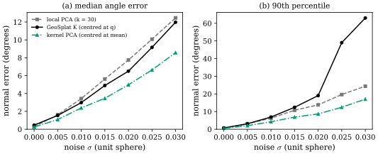
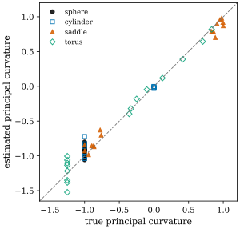
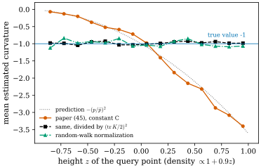

49.5 The Manifold Estimator in Detail
Goals
- 부록 E의 다섯 결과(Definition E.1, Proposition E.2–E.4, Corollary E.5, Proposition E.6, Theorem E.7)를 순서대로 말하고, 각각이 앞의 무엇을 써서 무엇을 주는지 설명할 수 있다.
- “Laplacian이 곱의 미분 규칙을 어기는 양 = gradient의 inner product”라는 한 가지 사실에서 metric, tangent space, normal이 나오는 이유를 보일 수 있다.
- Laplacian을 kernel 합으로 바꾸면 tangential kernel matrix가 kernel로 가중한 local second moment, 곧 local PCA의 한 변형이 된다는 것을 증명하고, 잡음 아래에서 local PCA와 비교할 수 있다.
- shape operator의 식 (50)을 Bakry–Émery의 \(\Gamma\)-calculus로 읽고, Gaussian 중심의 밀도가 고르지 않을 때 curvature가 밀도의 제곱만큼 부풀려진다는 것과 그 보정을 설명할 수 있다.
Prerequisites
- Section 49.4의 Theorem 3.2(Theorem 49.4.1)와 Koszul formula(Proposition 49.4.3).
- Laplace–Beltrami operator와 graph Laplacian, random walk(Section 42.1, 특히 Remark 42.1.9).
- submanifold의 second fundamental form과 Gauss formula(Chapter 25), tangent projection의 도함수(Proposition 46.6.1).
Motivation
부록 E는 논문에서 가장 긴 부분이다. 식 (39)부터 (127)까지 89개의 식이 있다. 그러나 이야기의 줄기는 짧다. 점들만 주어졌을 때 surface의 기하를 얻으려면 미분이 필요한데, 점에서는 미분을 할 수 없다. 대신 Laplacian은 점들로 근사할 수 있다(heat kernel, random walk). 그리고 Laplacian 하나만 있으면 곱의 미분 규칙을 어기는 양에서 gradient의 inner product가 나오고, 그것을 두 번 겹치면 Hessian이 나온다. coordinate function과 height function에 이 둘을 적용하면 metric, tangent space, normal, shape operator가 모두 나온다.
이 절은 이 줄기를 따라 다섯 결과를 읽는다. 그리고 논문이 하지 않은 두 가지 계산을 덧붙인다. 하나는 kernel로 근사한 Laplacian을 넣으면 tangential kernel matrix가 무엇이 되는지(kernel matrix = weighted local PCA)이고, 다른 하나는 Gaussian 중심의 밀도가 고르지 않으면 무슨 일이 생기는지(density)다. 둘 다 GeoSplat의 “noise-robust”라는 주장을 따지는 데 필요하다.
The Five Steps
먼저 전체 흐름을 보자. \(\Gamma(f, h) = \tfrac12\operatorname{Lbnz}_\Delta[f, h]\)라 쓰면(Bakry–Émery의 carré du champ, 아래 상자) 다섯 단계는 다음과 같다.
- 점들에서 Laplacian \(\Delta\)를 kernel 합으로 근사한다(Proposition 49.5.5 = Prop. E.4).
- coordinate function \(\varphi_d(\mathbf{x}) = [\mathbf{x}]_d\)로 \(\mathcal{K}^i_{ab} = \Gamma(\varphi_a, \varphi_b)(\mathbf{q})\)를 만든다. 이것이 metric이다(Proposition 49.5.3 = Prop. E.3).
- \(\mathcal{K}^i\)의 eigen decomposition으로 tangent basis(eigenvalue \(1\))와 normal(eigenvalue \(0\))을 얻는다(Proposition 49.5.2, Corollary 49.5.7 = Prop. E.2, Cor. E.5).
- normal \(\mathbf{n}\)으로 height function \(\eta\)를 만들고, \(\Gamma\)를 겹쳐 \(s(\mathbf{n}, \mathbf{v}_a, \mathbf{v}_b) = \operatorname{Hess}\eta(\mathbf{v}_a, \mathbf{v}_b)\)를 계산한다(Proposition 49.5.8 = Prop. E.6).
- tangent basis로 \(2 \times 2\) matrix \(\mathcal{S}^i\)를 만들고 eigen decomposition으로 principal curvature·direction을 얻는다(Theorem 49.5.10 = Thm. E.7).
논문은 이 방향이 moving least squares나 heat equation을 쓰는 고전적인 manifold 추정(Coifman–Lafon의 diffusion map [CoifmanLafon06] 등)과 겹친다고 밝히고, 목표는 Gaussian의 위치와 모양을 함께 쓰는 실용적인 안내라고 쓴다 [GeoSplat25, App. E].
Tangent Vectors from Coordinate Curves (E.1.1–E.1.2)
tangent vector는 곡선의 속도다. 논문은 이것을 출발점으로 삼는다.
Definition 49.5.1 (curve-based tangent vector) [GeoSplat25, Def. E.1]. embedded manifold \(\mathcal{M} \subseteq \mathcal{E}\)의 점 \(\boldsymbol{\mu}^i\)에서 tangent인 임의의 vector \(\mathbf{v}^i_\star\)에 대해, 곡선 \(\gamma^i_\star\colon \R \to \mathcal{M}\)이 있어서
이다. 여기서 \(\partial_s\)는 \(\mathcal{E}\)의 미분이다.
논문은 이것을 “1차 양(tangent vector)의 추정을 0차 양(곡선 위의 점)의 근사로 바꾸는” 출발점이라 설명한다. 이 장의 주석: 이것은 정의라기보다 tangent vector의 표준 성질이고(Chapter 13), 곡선은 “continuous”가 아니라 적어도 \(C^1\)이어야 한다.
어떤 곡선을 쓸까? 평평한 공간이면 \(d\)번째 좌표축을 따라 가는 곡선이 자연스럽다. 다른 좌표는 그대로다(식 (40)).
휜 manifold에서는 그런 곡선이 없으므로, 속력을 \(c_d \gt 0\)으로 고정하고 \(d\)번째 좌표를 가장 빨리 늘리는 곡선을 고른다(식 (41)).
그 속도를 \(\mathbf{v}^i_d\)라 한다. 답은 (49.5.5)에서 보듯 좌표축 \(e_d\)를 tangent plane에 project한 방향이다. \(d\)번째 좌표를 가장 빨리 늘리는 tangent 방향은 \(\operatorname{grad}\varphi_d\)이기 때문이다.
Proposition 49.5.2 (tangential kernel analysis) [GeoSplat25, Prop. E.2]. embedded Riemannian manifold \(\mathcal{M} \subseteq \mathcal{E}\)의 임의의 점 \(\mathbf{q} = \boldsymbol{\mu}^i\)에서 좌표에서 온 vector \(\{\mathbf{v}^i_d\}_{1 \le d \le D_{\mathcal{E}}}\)는 \(T_{\mathbf{q}}\mathcal{M}\)을 span하고, 그 inner product로 만든 tangential kernel matrix
의 eigenvector 가운데 양의 eigenvalue \(\lambda^i_d \gt 0\)에 대응하는 \(\{\mathbf{u}^i_d\}_{1 \le d \le D_{\mathcal{M}}}\)가 \(T_{\mathbf{q}}\mathcal{M}\)의 basis를 이룬다.
Proof sketch. 부록 E.4(식 (52)–(78))를 줄인다. (준비, 식 (52)–(59)) Gauss formula \(\nabla^{\mathcal{M}}_{\mathbf{U}_1}\mathbf{U}_2 = (\nabla^{\mathcal{E}}_{\mathbf{U}_1}\mathbf{U}_2)^\top\), induced metric \(g^{\mathcal{M}}(\mathbf{u}_1, \mathbf{u}_2) = \mathbf{u}_1^{\mathsf T}\mathbf{u}_2\), 그리고 곡선이 \(\mathcal{M}\)과 \(\mathcal{E}\)에 함께 있으므로 방향 도함수가 같다는 것에서 \(\operatorname{grad}^{\mathcal{M}}f = (\operatorname{grad}^{\mathcal{E}}f)^\top\)(식 (59))를 얻는다. coordinate function에 쓰면 \(\operatorname{grad}^{\mathcal{E}}\varphi_d = e_d\)이므로(식 (60)–(63))
이다(식 (63)–(64)). \(\mathbf{n}_{d'}\)은 normal space의 orthonormal basis이고, \(\mathbf{L}\)은 tangent projection(Chapter 46의 \(P\))이다. (rank, 식 (65)–(68)) \(\mathbf{L}\mathbf{n} = \mathbf{0}\), tangent \(\mathbf{u}\)에서 \(\mathbf{L}\mathbf{u} = \mathbf{u}\)이므로 \(\mathbf{L}\)은 rank \(D_{\mathcal{M}}\)의 projection이고, \(\{\mathbf{L}e_d\}\)는 tangent plane을 span한다. (kernel matrix, 식 (69)–(78)) \(\mathcal{K}^i\)는 Gram matrix이므로 positive semidefinite이고, eigenvalue \(0\)의 eigenvector \(\mathbf{u}_\star\)는 \(\sum_ju_{\star,j}\mathbf{v}_j = \mathbf{0}\)을 만족하므로 normal이다. 역으로 모든 normal은 eigenvalue \(0\)이다. 따라서 양의 eigenvalue의 eigenvector는 tangent다. 마지막으로 \(\tilde{\mathbf{v}}_d = \mathbf{L}e_d\)를 쓰면 \(\mathcal{K}^i = \mathbf{L}^{\mathsf T}\mathbf{L} = \mathbf{L}\)이므로 양의 eigenvalue는 모두 \(1\)이다.
The Metric from the Laplacian (E.1.2, E.5)
\(\mathcal{K}^i\)를 계산하려면 tangent vector의 inner product가 필요하다. 논문은 그것을 Laplacian만으로 쓴다. linear operator \(\square\)에 대해
를 Leibniz defect(라이프니츠 결함)라 부르자(논문의 식 (83), 이름은 이 장의 것이다). 1차 미분 연산자는 Leibniz rule을 지키므로 이 값이 \(0\)이고, 2차 미분 연산자만 어긴다.
Proposition 49.5.3 (curve-derived Riemannian metric) [GeoSplat25, Prop. E.3]. embedded manifold \(\mathcal{M} \hookrightarrow \mathcal{E}\)의 점 \(\mathbf{q} = \boldsymbol{\mu}^i\)와 좌표에서 온 vector \(\{\mathbf{v}^i_d\}\)에 대해
이다. \(\Delta\)는 \(C^\infty(\mathcal{M})\) 위의 Laplacian이다.
Proof. 부록 E.5(식 (79)–(101))의 요점은 곱의 미분 규칙이다. Euclidean space에서는 \(\Delta = \sum_i\partial_i^2\)이고 Leibniz rule을 두 번 쓰면(식 (80))
이므로 \(g(\operatorname{grad}f, \operatorname{grad}h) = \tfrac12\operatorname{Lbnz}_\Delta[f, h]\)이다(식 (81)–(84)). 휜 manifold에서는 local frame에서 \(\Delta f = \sum\bar g^{d'd}\partial_d\partial_{d'}f + (\text{1차 항})\)이고(식 (85)–(94)), 1차 항은 Leibniz rule을 지키므로 Leibniz defect에서 사라진다(식 (95)–(97)). 남은 2차 항이 \(2\sum\bar g^{d'd}\partial_df\,\partial_{d'}h = 2g(\operatorname{grad}f, \operatorname{grad}h)\)이므로 (49.5.8)이 그대로 성립한다(식 (98)–(99)). coordinate function을 넣으면 \(\operatorname{grad}^{\mathcal{M}}\varphi_d = \tilde{\mathbf{v}}_d\)((49.5.5))이므로 (49.5.7)이다(식 (100)–(101)).
논문은 이 결과의 의의를 metric을 “접근할 수 있는 0차 양(좌표값 \(\varphi_d(\mathbf{q}) = [\boldsymbol{\mu}^i]_d\))”만으로 표현한 것이라 쓴다. 대신 Laplacian이라는 모르는 양이 들어오고, 그것은 점들에서 추정할 수 있다(Perry–Mahoney 2011, Cheng–Yang 2005, Chuang et al. 2009, Xu–Dunn 2019). 결과를 정리하면 \(\mathcal{K}^i = \mathbf{L}\), 곧 Chapter 46의 tangent projection \(P(\mathbf{q})\)다. 연속적인 예로 확인해 보자.
Example 49.5.4 (the unit sphere). unit sphere의 Laplace–Beltrami operator에서 coordinate function은 \(\Delta x_a = -2x_a\)이다((46.5.4)의 \(\Delta_M\mathbf{x} = \vec H = -2\mathbf{N}\)). 2차 다항식 \(x_ax_b\)는 \(\Delta(x_ax_b) = 2\delta_{ab} - 6x_ax_b\)이다. 그러므로
\[ \begin{aligned} \tfrac12\operatorname{Lbnz}_\Delta[x_a, x_b] &= \tfrac12\big(2\delta_{ab} - 6x_ax_b + 2x_ax_b + 2x_ax_b\big) \\ &= \delta_{ab} - x_ax_b \end{aligned} \]
이고, 이것은 점 \(\mathbf{x}\)에서의 tangent projection \(\mathbf{I} - \mathbf{x}\mathbf{x}^{\mathsf T}\)이다. eigenvalue는 \(1, 1, 0\), \(0\)의 eigenvector는 normal \(\mathbf{x}\)다. spherical coordinates의 Laplace–Beltrami operator로 기호 계산을 하면 그대로 나온다.
Verification: verify/v-49-5-manifold-estimator.py
The Laplacian from the Points (E.1.3, E.6)
\(\Delta\)는 \(C^\infty(\mathcal{M})\) 위의 linear operator \(\mathscr{L}\)의 한 예다(식 (44)).
논문은 Feynman–Kac 공식과 같은 정신으로, 이 연산자를 Markov chain의 generator로 보고 Monte Carlo로 근사한다.
Proposition 49.5.5 (Markov-chain linear operator estimation) [GeoSplat25, Prop. E.4]. Gaussian 중심 \(\{\boldsymbol{\mu}^i\}_{i \in \mathcal{I}}\)가 \(\mathcal{M}\)에서 균일하게 뽑혔고, \(\mathscr{L}\)이 시간에 대해 동질인 Markov chain의 infinitesimal generator라 하자. 임의의 \(f \in C^\infty(\mathcal{M})\)에 대해
는 \(t \to 0\)에서 불편(unbiased) 근사다. \(C \gt 0\)은 \(\mathcal{M}\)에만 의존하고 \(k_t\)는 transition kernel이다. (논문은 이 명제와 식 (47)에서만 중심을 \(\mathbf{c}^i_{\text{obj}}\)로 쓴다. 이 장은 \(\boldsymbol{\mu}^i\)로 통일한다.)
Laplacian을 얻으려면 Gaussian kernel(식 (46))
를 쓰고, \(\mathbf{q}_1\)이나 \(\mathbf{q}_2\)에 대한 적분으로 정규화한다. kernel이 지수적으로 줄어드므로 실제로는 합을 최근접 이웃 몇 개로 제한한다. 밀도가 고르지 않은 곳(Gaussian이 드문 곳)을 위해 논문은 Gaussian의 모양을 쓰는 bandwidth-adaptive kernel도 제안한다(식 (47)).
covariance가 큰 Gaussian일수록 이웃을 더 넓게 본다. 이것이 부록 E에서 Gaussian의 모양을 쓰는 유일한 곳이다.
Proof sketch. 부록 E.6(식 (102)–(108))을 따른다. 시간에 대해 동질인 Markov process \(\{Z_t\}\)는 함수에 \(\mathcal{E}_t[f](z) = \mathbb{E}[f(Z_t) \mid Z_0 = z]\)로 작용하고, \(\mathcal{E}_0 = \mathrm{Id}\), \(\mathcal{E}_{s+t} = \mathcal{E}_s \circ \mathcal{E}_t\)인 semigroup을 이룬다(식 (102)–(103)). 형식적으로 \(\mathcal{E}_t = \exp(t\mathscr{L})\)이고(식 (104)), generator는
이다(식 (105)–(107), \(k_t \ge 0\), \(\int k_t(z, z')\,\mu(dz') = 1\)). \(\mu(\mathcal{S}) \lt \infty\)이고 점 \(\{z_i\}_{i=1}^N\)이 \(\mathcal{S}\)에서 균일하게 뽑혔다면 적분은 표본 평균으로 바뀐다(식 (108)).
곧 \(C = \mu(\mathcal{S})\)(surface의 넓이)이다.
이 장의 평가: 이 명제에는 네 가지 단서가 필요하다.
- 불편성. “unbiased”는 고정된 \(t\)에서 적분 (49.5.13)에 대한 Monte Carlo 근사가 불편이라는 뜻일 뿐이다. \(t\)가 유한하면 \(O(t)\)의 편향(curvature가 들어간 항)이 있다. Gaussian kernel의 generator가 Laplace–Beltrami operator로 가는 것(정규화 상수 \(\propto t^{-D_{\mathcal{M}}/2}\))은 증명에서 보이지 않고 인용으로 대신한다.
- 균일성. 논문은 이 Markov chain을 “손으로 설계했으므로” 균일성 가정이 타당하다고 쓴다. 그러나 설계하는 것은 kernel이고, 균일성은 표본점, 곧 Gaussian 중심의 분포에 대한 가정이다. densification은 texture가 많은 곳에 Gaussian을 몰아넣으므로 3DGS의 중심은 균일하지 않다. 그 결과는 아래에서 계산한다.
- 상수 \(C\). \(C = \mu(\mathcal{S})\)와 kernel의 정규화는 알 수 없으므로 \(\Delta\)는 전체 배율까지만 정해진다. 그 배율 \(c\)는 \(\mathcal{K}^i\)를 \(c\)배, curvature를 \(c^2\)배로 바꾼다. 비 \(\abs{\tau_1/\tau_2}\)와 방향은 그대로지만, MAC의 threshold(Section 49.3)과 식 (10)의 \(1/\tau\)는 이 배율에 직접 의존한다.
- 식 (47)의 \(\boldsymbol{\Lambda}_t\). \(t\boldsymbol{\Sigma}^i\boldsymbol{\Sigma}^j\)는 두 covariance가 교환하지 않으면 symmetric이 아니고, 단위가 (길이)\(^4\)이므로 quadratic form의 단위가 맞지 않는다. \(t(\boldsymbol{\Sigma}^i + \boldsymbol{\Sigma}^j)/2\) 같은 것을 의도했을 수 있지만, 의도한 식은 논문에 적혀 있지 않다(Exercise 49.5.5).
The Kernel Matrix Is a Weighted Local PCA
이제 두 결과를 합쳐 보자. (49.5.10)의 꼴, 곧 \(\mathscr{L}f(\mathbf{q}) = \sum_ja_j(f_j - f(\mathbf{q}))\)(\(f_j = f(\boldsymbol{\mu}^j)\), \(a_j \ge 0\))인 연산자를 (49.5.7)에 넣으면 무엇이 나오는가? 이것은 이 장의 계산이다.
Proposition 49.5.6 (the Leibniz defect of a kernel generator). \(\mathscr{L}f(\mathbf{q}) = \sum_ja_j(f_j - f(\mathbf{q}))\)이면 모든 \(f, h\)에 대해
이다. 특히 coordinate function에서 GeoSplat의 tangential kernel matrix는 \(\mathbf{q}\)를 중심으로 kernel로 가중한 이웃의 second moment matrix
\[ \mathcal{K}^i = \tfrac12\sum_ja_j(\boldsymbol{\mu}^j - \mathbf{q})(\boldsymbol{\mu}^j - \mathbf{q})^{\mathsf T} \]
이다.
Proof. \(f = f(\mathbf{q})\), \(h = h(\mathbf{q})\)로 줄여 쓰면 정의 (49.5.6)에서
\[ \begin{aligned} &\operatorname{Lbnz}_{\mathscr{L}}[f, h](\mathbf{q}) \\ &= \sum_ja_j\big(f_jh_j - fh - f(h_j - h) - h(f_j - f)\big) \end{aligned} \]
이고, 괄호 안은 \((f_j - f)(h_j - h)\)이다. \(f = \varphi_a\), \(h = \varphi_b\)이면 \(f_j - f = (\boldsymbol{\mu}^j - \mathbf{q})_a\)이다.
그러므로 GeoSplat의 normal은 “\(\mathbf{q}\) 주변 이웃의 kernel 가중 second moment의 가장 작은 eigenvector”다. 이것은 논문이 noise-sensitive하다고 비판한 local PCA(가장 가까운 \(k\)개 이웃의 covariance의 가장 작은 eigenvector, Section 49.1)와 같은 계열이다. 차이는 셋이다. 이웃의 무게(Gaussian kernel 대 최근접 \(k\)개), 중심(\(\mathbf{q}\) 자신 대 이웃의 평균), 그리고 eigenvalue의 배율이다. 그렇다면 잡음에 대한 강건성은 어떤가?
Figure 49.5.1이 그 비교다. unit sphere의 점에 크기 \(\sigma\)의 잡음을 더하고, 세 방법의 normal 오차를 쟀다. (a)의 중앙값은 세 방법이 비슷하게 \(\sigma\)에 비례해 커진다. 회색 파선(local PCA)과 검은 실선(GeoSplat의 \(\mathcal{K}\))은 거의 겹치고, 같은 kernel 무게를 쓰되 평균을 중심으로 한 초록 일점쇄선이 가장 낮다. (b)의 상위 \(10\%\)에서는 검은 실선이 \(\sigma = 0.025\) 이후 \(50^\circ\) 넘게 치솟는다. \(\mathbf{q}\) 자신이 잡음으로 surface에서 떨어지면 모든 \(\boldsymbol{\mu}^j - \mathbf{q}\)에 같은 normal 성분이 더해져, normal 방향의 eigenvalue가 tangent 방향보다 커지기 때문이다. 그때 “가장 작은 eigenvector”는 tangent vector가 된다. 이 꼬리의 실패는 잡음 \(\sigma\)가 kernel 폭 \(\sqrt t \approx 0.055\)에 비해 클 때 생긴다. 이 장의 추가 계산에서 kernel을 넓히면(\(t = 0.012\), 유효 이웃 약 \(120\)개) \(\sigma = 0.03\)의 90번째 백분위수가 \(\mathcal{K}\)는 약 \(7^\circ\), 같은 수의 이웃을 쓴 local PCA는 약 \(6^\circ\), kernel PCA는 \(5^\circ\)로, 극적인 차이는 사라지지만 순서는 그대로다. 그러므로 공정한 결론은 “같은 크기의 이웃에서 \(\mathcal{K}\)가 local PCA보다 잡음에 강하다는 근거는 없다”이다.

Dimension and Normal (E.2, E.7)
surface(\(D_{\mathcal{M}} = 2\))이면 unit normal은 평행하지 않은 두 tangent vector에서 바로 나온다(식 (48)).
논문은 더 편하게, 차원과 normal space가 \(\mathcal{K}^i\) 분해의 부산물이라고 쓴다.
Corollary 49.5.7 (induced orthogonal space) [GeoSplat25, Cor. E.5]. \(\mathcal{M} \hookrightarrow \mathcal{E}\)의 임의의 점 \(\mathbf{q} = \boldsymbol{\mu}^i\)에서 \(\mathcal{K}^i\)((49.5.4))의 양의 eigenvalue의 개수는 \(D_{\mathcal{M}}\)이다. eigenvalue \(0\)에 대응하는 eigenvector \(\{\tilde{\mathbf{u}}^i_d\}_{D_{\mathcal{M}} + 1 \le d \le D_{\mathcal{E}}}\)는 \(N_{\mathbf{q}}\mathcal{M}\)의 basis를 이룬다.
Proof. 부록 E.7은 Proposition 49.5.2의 증명에서 얻은 두 사실, 곧 모든 normal은 eigenvalue \(0\)의 eigenvector이고 모든 tangent vector는 eigenvalue \(1\)의 eigenvector라는 것을 쓴다(\(\mathcal{K}^i = \mathbf{L}\)). 그러므로 eigenvalue \(1\)의 eigenspace가 \(T_{\mathbf{q}}\mathcal{M}\), \(0\)의 eigenspace가 \(N_{\mathbf{q}}\mathcal{M}\)이고, 양의 eigenvalue는 \(D_{\mathcal{M}}\)개다.
논문은 \(3 \times 3\) matrix의 eigen decomposition은 닫힌 꼴로 풀 수 있어 반복법이 필요 없다고 덧붙인다. 본문의 문장(“the kernel matrix decomposition in Theorem E.2”)은 Proposition E.2를 가리킨다. 실제 데이터에서 eigenvalue는 정확히 \(0, 1\)이 아니므로(Example 49.4.2의 \((0.010, 0.960, 1.017)\)), “가장 작은 eigenvalue의 eigenvector가 normal”로 쓰게 된다.
The Shape Operator from Nested Leibniz Defects (E.3, E.8)
curvature는 surface가 ambient space 안에서 휘는 방식을 기술하는 extrinsic 양이고, 모든 종류의 curvature가 각 점의 shape operator로 정해진다(식 (49)).
normal \(\mathbf{n}\)을 고정하면 tangent vector 두 개를 수로 보내는 symmetric bilinear form이고, 이 study set의 \(\inner{W_{\mathbf{n}}\mathbf{u}_1}{\mathbf{u}_2} = \inner{\mathrm{II}(\mathbf{u}_1, \mathbf{u}_2)}{\mathbf{n}}\)이다(Table 49.1.1). 논문은 Proposition E.3처럼 이것도 좌표와 Laplacian만으로 쓴다. (식 (49) 바로 다음 문장은 이 operator를 \(s^i\) 대신 \(\int^i\)로 잘못 적었다. Euclidean space에서는 이것이 늘 \(0\)이라는 문장이다.)
Proposition 49.5.8 (curve-derived shape operator) [GeoSplat25, Prop. E.6]. \(\mathcal{M} \hookrightarrow \mathcal{E}\)의 임의의 점 \(\mathbf{q} = \boldsymbol{\mu}^i\)와 좌표에서 온 tangent vector \(\mathbf{v}^i_{d_1}, \mathbf{v}^i_{d_2}\)(\(1 \le d_1, d_2 \le D_{\mathcal{E}}\)), normal \(\mathbf{n} \in N_{\mathbf{q}}\mathcal{M}\)에 대해
이다. 여기서 \(\mathcal{A}[f_1, f_2, f_3] = \operatorname{Lbnz}_\Delta[f_1, \operatorname{Lbnz}_\Delta[f_2, f_3]]\)은 2차 미분 연산자이고, \(\eta(\mathbf{q}') = \inner{\mathbf{n}}{\mathbf{q}' - \mathbf{q}}\)는 height function이다.
Proof sketch. 부록 E.8(식 (109)–(125))은 세 단계다. (1) shape operator의 정의 \(s(\mathbf{n}, \mathbf{u}_1, \mathbf{u}_2) = -\inner{\nabla^{\mathcal{E}}_{\mathbf{u}_1}\mathbf{N}}{\mathbf{u}_2}\)(식 (109), \(\mathbf{N}\)은 \(\mathbf{n}\)을 확장한 normal field)에서 시작한다. (2) height function \(\eta\)(식 (110))는 \(\operatorname{grad}^{\mathcal{M}}\eta = \mathbf{n}^\top\)이라서(식 (111)) \(\mathbf{q}\)에서 \(\eta = 0\), \(\operatorname{grad}\eta = \mathbf{0}\)이다. Hessian \(\operatorname{Hess}f(\mathbf{U}_1, \mathbf{U}_2) = g(\nabla_{\mathbf{U}_1}\operatorname{grad}f, \mathbf{U}_2)\)(식 (112)–(115))을 \(\eta\)에 쓰면 \(\operatorname{Hess}_{\mathbf{q}}\eta(\mathbf{u}_1, \mathbf{u}_2)\) \(= -\inner{\nabla^{\mathcal{E}}_{\mathbf{u}_1}\mathbf{N}}{\mathbf{u}_2}\) \(= s(\mathbf{n}, \mathbf{u}_1, \mathbf{u}_2)\)이다(식 (116)–(118)). 곧 height function의 Hessian이 shape operator다. (3) \(\operatorname{Hess}\eta(\operatorname{grad}\varphi_{d_1}, \operatorname{grad}\varphi_{d_2})\)에 Koszul formula(Proposition 49.4.3)를 쓰고(식 (119)–(120)), bracket 항을 방향 도함수로 바꾸어 정리하면(식 (121)–(123))
\[ \begin{aligned} s = \tfrac12\big(&\partial_{\operatorname{grad}\varphi_{d_1}}g(\operatorname{grad}\eta, \operatorname{grad}\varphi_{d_2}) \\ &+ \partial_{\operatorname{grad}\varphi_{d_2}}g(\operatorname{grad}\eta, \operatorname{grad}\varphi_{d_1}) \\ &- \partial_{\operatorname{grad}\eta}g(\operatorname{grad}\varphi_{d_1}, \operatorname{grad}\varphi_{d_2})\big) \end{aligned} \]
이다. 각 항은
\[ \begin{aligned} &\partial_{\operatorname{grad}f_1}g(\operatorname{grad}f_2, \operatorname{grad}f_3) \\ &= g\big(\operatorname{grad}f_1, \operatorname{grad}g(\operatorname{grad}f_2, \operatorname{grad}f_3)\big) \end{aligned} \]
이고, (49.5.7)을 두 번 쓰면 \(\tfrac14\mathcal{A}[f_1, f_2, f_3]\)이다(식 (124)–(125)).
이 식을 점 \(\mathbf{q}\)에서 더 줄일 수 있다. 이것은 이 장의 계산이고, Section 49.4의 varifold estimator와의 관계를 보여 준다.
Proposition 49.5.9 (what the nested defects compute). (49.5.18)의 세 항은 점 \(\mathbf{q}\)에서 다음과 같다. \(P\)는 tangent projection, \(A_{abk} = \inner{\nabla^MP_{bk}}{e_a}\)는 그 도함수다((46.6.2)).
\[ \begin{aligned} \mathcal{A}[\eta, \varphi_a, \varphi_b](\mathbf{q}) &= 0, \\ \tfrac14\mathcal{A}[\varphi_a, \eta, \varphi_b](\mathbf{q}) &= \sum_kn_kA_{abk} = s(\mathbf{n}, Pe_a, Pe_b) \end{aligned} \]
Proof. \(\tfrac14\mathcal{A}[\eta, \varphi_a, \varphi_b]\) \(= \Gamma(\eta, \Gamma(\varphi_a, \varphi_b))\) \(= \inner{\operatorname{grad}\eta}{\operatorname{grad}P_{ab}}\)이고 \(\mathbf{q}\)에서 \(\operatorname{grad}\eta = P\mathbf{n} = \mathbf{0}\)이다. 다음으로 \(\Gamma(\eta, \varphi_b)(\mathbf{y}) = \inner{P(\mathbf{y})\mathbf{n}}{e_b} = \sum_kP_{bk}(\mathbf{y})n_k\)이므로 \(\Gamma(\varphi_a, \Gamma(\eta, \varphi_b))(\mathbf{q})\) \(= \sum_kn_k\inner{\nabla^MP_{bk}}{e_a}\) \(= \sum_kn_kA_{abk}\)이다. Proposition 46.6.1의 \(A_{abk} = B^k_{ab} + B^b_{ak}\)에서 \(\sum_kn_kB^k_{ab}\) \(= \inner{\mathrm{II}(Pe_a, Pe_b)}{\mathbf{n}}\) \(= s(\mathbf{n}, Pe_a, Pe_b)\)이고, \(\sum_kn_kB^b_{ak}\)은 둘째 자리에 normal \(\mathbf{n}\)이 들어가므로(\(P\mathbf{n} = \mathbf{0}\)) \(0\)이다.
그러므로 연속적인 극한에서 (49.5.18)의 셋째 항은 \(0\)이고, 앞의 두 항은 같다. manifold estimator가 실제로 재는 것은 “tangent projection의 도함수를 normal과의 inner product”이고, 이것은 varifold estimator가 이웃의 \(\tilde{\mathbf{V}}^j - \tilde{\mathbf{V}}^i\)로 재는 것과 같은 양이다((49.4.10)). 두 estimator는 언어만 다르다. unit sphere(바깥 normal)에서 연속적인 \(\Gamma\)로 계산하면 \(\tfrac14\mathcal{A}[\varphi_a, \eta, \varphi_b](\mathbf{q}) = -P_{ab}(\mathbf{q})\)이고 (49.5.18)은 \(-P\)다(Exercise 49.5.3). 점에서 계산할 때는 셋째 항이 \(0\)이 아니므로 잡음을 더할 뿐이다.
Theorem 49.5.10 (shape operator factorization) [GeoSplat25, Thm. E.7]. \(\mathcal{M} \hookrightarrow \mathcal{E}\)의 점 \(\mathbf{q} = \boldsymbol{\mu}^i\)와 고정된 normal \(\mathbf{n}\)에 대해, shape operator와 orthonormal tangent vector \(\mathcal{U}^i = \{\mathbf{u}^i_d\}_{1 \le d \le D_{\mathcal{M}}}\)로 만든 matrix
의 eigenvalue는 principal curvature \(\tau^i_d\)이고, realigned eigenvector \(\tilde{\mathbf{w}}^i_d = \mathcal{U}^i\mathbf{w}^i_d\)는 principal direction이다.
Proof. 부록 E.9(식 (126)–(127))를 따르되 한 곳을 고친다. 고정된 \(\mathbf{n}\)에서 shape operator는 tangent 입력에 대해 linear이므로 \(3 \times 3\) symmetric matrix \(\mathbf{M}^i\)로 쓸 수 있고, tangent에 제한한 연산자로 보면 \(\mathbf{M}^i = \mathbf{L}\mathbf{M}^i\mathbf{L}\)이다. 그 \(0\)이 아닌 eigenvalue와 eigenvector가 principal curvature와 direction이다(Definition 8.3.4). \(\mathcal{S}^i = (\mathcal{U}^i)^{\mathsf T}\mathbf{M}^i\mathcal{U}^i\)(식 (126))이다. \(\mathbf{M}^i\mathbf{w} = \tau\mathbf{w}\)이고 \(\tau \ne 0\)이면 \(\mathbf{w}\)는 tangent라서 \(\mathcal{U}^i(\mathcal{U}^i)^{\mathsf T}\mathbf{w} = \mathbf{w}\)이고, \(\mathcal{S}^i((\mathcal{U}^i)^{\mathsf T}\mathbf{w}) = (\mathcal{U}^i)^{\mathsf T}\mathbf{M}^i\mathbf{w} = \tau(\mathcal{U}^i)^{\mathsf T}\mathbf{w}\)이다(식 (127)). 거꾸로 \(\mathcal{S}^i\)의 eigenvector \(\mathbf{w}^i_d\)를 \(\mathcal{U}^i\mathbf{w}^i_d\)로 되돌리면 \(\mathbf{M}^i\)의 eigenvector다.
Figure 49.5.2는 이 estimator를 이 study set의 running surface에 돌린 결과다. 가로축이 참 principal curvature, 세로축이 추정값이고, 점이 파선(\(y = x\)) 가까이 있을수록 정확하다. sphere(검정)는 \(-1\) 위에 세로로 퍼져 있고(\(-1.06\)에서 \(-0.80\)), cylinder(파란 빈 사각형)의 \(0\)은 거의 정확하다. saddle(주홍 삼각형)은 \(\pm1\) 근처, torus(초록 빈 마름모)는 \(-0.36\)에서 \(0.83\)까지의 적도 방향 값을 잘 따라가지만, 큰 값 \(-1.25\)에서는 \(-1.0\)에서 \(-1.5\)까지 흩어진다.

When the Gaussians Are Not Uniform
Proposition 49.5.5는 Gaussian 중심이 균일하다고 가정했다. 균일하지 않으면 무엇이 달라지는가? 이것은 이 장의 분석이다.
Proposition 49.5.11 (density distortion and its correction). 중심의 밀도가 smooth positive 함수 \(p\)이고 generator가 (49.5.10)처럼 상수 \(C\)로 정규화되어 있으면, \(t \to 0\)에서 어떤 상수 \(c \gt 0\)에 대해
이다. 그 결과 점 \(\mathbf{q}\)에서 \(\mathcal{K}^i \approx c\,p(\mathbf{q})\,P(\mathbf{q})\)이고, (49.5.18)로 계산한 curvature는 참값의 \(c^2p(\mathbf{q})^2\)배다. principal direction은 바뀌지 않는다. 따라서 \(\mathcal{S}^i\)를 \((\operatorname{tr}\mathcal{K}^i/D_{\mathcal{M}})^2\)로 나누거나, 무게를 \(a_j = (4/t)k_j/\sum_lk_l\)(random walk)로 정규화하면 밀도의 영향이 사라진다.
Proof sketch. kernel 합의 기댓값을 \(\mathbf{q}\) 근처에서 전개하면 2차 항이 \(p\Delta f\), 밀도의 기울기에서 1차 drift 항 \(2\inner{\operatorname{grad}p}{\operatorname{grad}f}\)가 나온다((49.5.21)). drift는 1차 미분 연산자이므로 Leibniz defect에서 사라지고 \(\operatorname{Lbnz}_{\mathscr{L}} = 2cp\,\Gamma\)다. 그러므로 \(\mathcal{K} = cp\,P\)다. 겹친 defect는
\[ \begin{aligned} \mathcal{A}[f_1, f_2, f_3] &= 4c^2p^2\,\Gamma(f_1, \Gamma(f_2, f_3)) \\ &\quad + 4c^2p\,\Gamma(f_1, p)\,\Gamma(f_2, f_3) \end{aligned} \]
이다. 둘째 항은 \(\mathbf{q}\)에서 \(\Gamma(\eta, \cdot) = 0\)이라서 (49.5.18)의 세 항 모두에서 사라진다(첫째와 둘째 항에서는 \(\Gamma(\eta, \varphi_b)(\mathbf{q}) = 0\), 셋째 항에서는 \(\Gamma(\eta, p)(\mathbf{q}) = 0\)). 남는 것은 \(c^2p^2\)배다. random walk로 정규화하면 \(\sum_lk_l \propto p\)가 나뉘어 \(\mathscr{L} \approx \Delta + 2\inner{\operatorname{grad}\log p}{\operatorname{grad}\cdot}\)가 되고, drift는 다시 사라진다(Remark 42.1.9).
Figure 49.5.3이 이것을 확인한다. unit sphere에 밀도가 \(1 + 0.9z\)인 점을 뿌리면 북극 근처는 남극 근처보다 \(8\)배 가까이 조밀하다. 상수로 정규화한 판(주홍 실선)은 남극 근처에서 curvature를 거의 \(0\)으로, 북극 근처에서 \(-3.4\)로 낸다. 예측한 \(-(p/\bar p)^2\)(회색 점선)를 그대로 따라간다. \((\operatorname{tr}\mathcal{K}/2)^2\)로 나눈 판(검은 파선)과 random-walk 판(초록 일점쇄선)은 어디서나 \(-1\) 근처다.

이 장의 평가: 논문은 kernel의 정규화를 “\(\mathbf{q}_1\) 또는 \(\mathbf{q}_2\)에 대한 적분으로” 한다고만 쓴다. \(\mathbf{q}_2\)(이웃)에 대한 정규화가 random walk이고, 그렇게 구현했다면 이 문제는 없다. 어느 쪽인지, 그리고 상수 \(C\)의 값은 논문에 적혀 있지 않다. 어느 경우든 GeoSplat의 curvature는 전체 배율 \(c^2\)이 정해지지 않은 양이고, 이 배율이 \(\xi_{\min} = 0.001\) 같은 절대 threshold와 만나는 곳(Section 49.3)에서 결과를 바꾼다.
Summary
- 좌표축을 tangent plane에 project한 \(\tilde{\mathbf{v}}_d = \mathbf{L}e_d\)의 Gram matrix가 \(\mathcal{K}^i = \mathbf{L}\)이고, 그 eigenvector가 tangent basis와 normal을 준다(Proposition 49.5.2, Corollary 49.5.7). 정규화한 \(\mathbf{v}_d\)로는 성립하지 않는다.
- \(\mathcal{K}^i\)의 성분은 \(\tfrac12\operatorname{Lbnz}_\Delta[\varphi_a, \varphi_b]\)이고(Proposition 49.5.3), \(\Delta\)는 kernel 합으로 근사한다(Proposition 49.5.5). 그러면 \(\mathcal{K}^i\)는 \(\mathbf{q}\) 중심의 kernel 가중 second moment, 곧 local PCA의 변형이다(Proposition 49.5.6). 잡음에 대해 local PCA보다 강하지 않고, 꼬리는 더 나쁘다(Figure 49.5.1).
- shape operator는 height function의 Hessian이고, \(\Gamma\)-calculus의 항등식으로 겹친 Leibniz defect만으로 계산된다(Proposition 49.5.8). 점 \(\mathbf{q}\)에서 그것은 tangent projection의 도함수를 normal과의 inner product으로, varifold estimator와 같은 양이다(Proposition 49.5.9).
- \(2 \times 2\) matrix \(\mathcal{S}^i\)의 eigenpair가 principal curvature·direction이다(Theorem 49.5.10). running surface에서 평균 절대오차는 약 \(0.08\)이다(Figure 49.5.2).
- 중심의 밀도가 고르지 않고 generator를 상수로 정규화하면 curvature가 밀도의 제곱만큼 틀린다. \((\operatorname{tr}\mathcal{K}/2)^2\)로 나누거나 random walk로 정규화하면 고쳐진다(Proposition 49.5.11).
다음 절에서는 이 estimator와 Section 49.3의 framework를 실제 장면에서 평가한 논문 §5와 부록 F를 읽는다. 세 개의 표와 일곱 개의 그림의 모든 수치를 정리하고, 어디서 GeoSplat이 이기고 어디서 그렇지 않은지를 확인한다.
Quick check
Exercise 49.5.1 ★ normal이 \(\mathbf{n} = (0.6, 0, 0.8)\)인 점에서 \(\mathbf{L} = \mathbf{I} - \mathbf{n}\mathbf{n}^{\mathsf T}\)의 대각성분을 구하고, 정규화한 vector의 Gram matrix \(\mathbf{D}^{-1}\mathbf{L}\mathbf{D}^{-1}\)의 null vector \(\mathbf{D}\mathbf{n}\)이 \(\mathbf{n}\)과 이루는 각을 구하라.
Solution
\(\mathbf{L}_{11} = 1 - 0.36 = 0.64\), \(\mathbf{L}_{22} = 1\), \(\mathbf{L}_{33} = 1 - 0.64 = 0.36\)이므로 \(\mathbf{D} = \diag(0.8, 1, 0.6)\)이다. \(\mathbf{D}^{-1}\mathbf{L}\mathbf{D}^{-1}(\mathbf{D}\mathbf{n}) = \mathbf{D}^{-1}\mathbf{L}\mathbf{n} = \mathbf{0}\)이므로 null vector는 \(\mathbf{D}\mathbf{n} = (0.48, 0, 0.48)\), 정규화하면 \((0.707, 0, 0.707)\)이다. \(\mathbf{n}\)과의 inner product는 \(0.707\cdot0.6 + 0.707\cdot0.8 = 0.990\)이고 각은 \(8.13^\circ\)다. 정규화하면 normal이 틀린다.
Verification: verify/v-49-5-manifold-estimator.py
Exercise 49.5.2 ★ (49.5.15)를 이용해, kernel generator의 Leibniz defect가 \(f\)나 \(h\)가 상수이면 \(0\)이고, \(\operatorname{Lbnz}_{\mathscr{L}}[f, f](\mathbf{q}) \ge 0\)임을 보여라. 이것은 연속적인 \(\Gamma(f, f) = \norm{\operatorname{grad}f}^2\)의 어떤 성질에 대응하는가?
Solution
\(f\)가 상수이면 \(f_j - f(\mathbf{q}) = 0\)이므로 모든 항이 \(0\)이다. \(\operatorname{Lbnz}_{\mathscr{L}}[f, f](\mathbf{q}) = \sum_ja_j(f_j - f(\mathbf{q}))^2 \ge 0\)이다(\(a_j \ge 0\)). 연속적인 \(\Gamma(f, f) = \norm{\operatorname{grad}f}^2 \ge 0\)이고 상수의 gradient는 \(0\)인 것에 대응한다. 그래서 kernel로 만든 \(\mathcal{K}^i\)도 언제나 positive semidefinite다.
Verification: verify/v-49-5-manifold-estimator.py
Exercise 49.5.3 ★★ unit sphere의 점 \(\mathbf{q}\)(바깥 normal \(\mathbf{n} = \mathbf{q}\))에서 \(\Gamma(f, h) = \inner{P\operatorname{grad}f}{\operatorname{grad}h}\)를 써서 \(\Gamma(\eta, \varphi_b)(\mathbf{y})\)를 구하고, \(\Gamma(\varphi_a, \Gamma(\eta, \varphi_b))(\mathbf{q}) = -P_{ab}(\mathbf{q})\)임을 보여라. (49.5.18)은 무엇이 되는가?
Solution
\(\operatorname{grad}^{\mathcal{E}}\eta = \mathbf{n}\)이므로 \(\Gamma(\eta, \varphi_b)(\mathbf{y}) = (P(\mathbf{y})\mathbf{n})_b = n_b - (\mathbf{n}\cdot\mathbf{y})y_b\)이다. 이 함수의 \(\R^3\) gradient는 \(-(y_b\mathbf{n} + (\mathbf{n}\cdot\mathbf{y})e_b)\)이고 \(\mathbf{y} = \mathbf{q} = \mathbf{n}\)에서 \(-(q_b\mathbf{q} + e_b)\)다. \(P(\mathbf{q})\mathbf{q} = \mathbf{0}\)이므로 \(\Gamma(\varphi_a, \cdot)(\mathbf{q}) = (P(\mathbf{q})(-e_b))_a = -P_{ab}\)이다. 셋째 항은 \(\operatorname{grad}\eta(\mathbf{q}) = P\mathbf{n} = \mathbf{0}\)이라서 \(0\)이다. (49.5.18)은 \(\tfrac18(-4P - 4P - 0) = -P\)이고, tangent basis로 줄이면 \(-\mathbf{I}\), 곧 \(\tau_1 = \tau_2 = -1\)이다. 바깥 normal의 unit sphere에서 \(W = -\mathbf{I}\)와 맞는다.
Verification: verify/v-49-5-manifold-estimator.py
Exercise 49.5.4 ★ 장면의 한 부분에 Gaussian이 다른 곳보다 \(4\)배 조밀하게 몰려 있다. 상수 \(C\)로 정규화한 generator를 쓰면 그 부분의 \(\operatorname{tr}\mathcal{K}^i\)와 curvature는 몇 배로 나오는가? MAC로 평평한 곳을 고르는 upsampling(Section 49.3)에는 어떤 영향이 있는가?
Solution
Proposition 49.5.11에 따라 \(\operatorname{tr}\mathcal{K}^i\)는 \(4\)배, curvature는 \(16\)배다. 조밀한 곳의 MAC가 \(16\)배로 나오므로 그곳은 평평해도 upsampling 대상에서 빠지고, 반대로 드문 곳은 curvature가 작게 나와 휘어 있어도 대상이 되기 쉽다. 그런데 upsampling의 목적은 Gaussian이 드문 곳을 채우는 것이므로, 이 왜곡은 우연히 목적과 같은 방향일 수도 있다. 어느 쪽이든 의도한 기준(평평함)과는 다르다.
Verification: verify/v-49-5-manifold-estimator.py
Exercise 49.5.5 ★★ (49.5.12)의 \(\boldsymbol{\Lambda}_t = t\boldsymbol{\Sigma}^i\boldsymbol{\Sigma}^j\)가 symmetric이 아닐 수 있음을 예로 보이고, quadratic form \((\mathbf{q}_1 - \mathbf{q}_2)^{\mathsf T}\boldsymbol{\Lambda}_t^{-1}(\mathbf{q}_1 - \mathbf{q}_2)\)가 무차원이 되려면 \(t\)의 단위가 무엇이어야 하는지 따져라. 자연스러운 대안을 제시하라.
Solution
\(\boldsymbol{\Sigma}^i = \diag(1, 4, 0.01)\), \(\boldsymbol{\Sigma}^j\)를 \(\diag(2, 0.5, 0.01)\)을 \(z\)축으로 \(0.5\) rad 돌린 것이라 하면 둘은 교환하지 않고, \(\boldsymbol{\Sigma}^i\boldsymbol{\Sigma}^j - (\boldsymbol{\Sigma}^i\boldsymbol{\Sigma}^j)^{\mathsf T}\)의 성분이 \(0.5\)를 넘는다. symmetric이 아닌 matrix의 quadratic form은 symmetric part만 보므로 정의가 모호해진다. covariance의 단위는 (길이)\(^2\)이므로 곱은 (길이)\(^4\)이고, quadratic form이 무차원이려면 \(t\)가 (길이)\(^{-2}\)이어야 한다. 식 (46)의 \(t\)는 (길이)\(^2\)이므로 두 식의 \(t\)가 같은 양일 수 없다. \(\boldsymbol{\Lambda}_t = t(\boldsymbol{\Sigma}^i + \boldsymbol{\Sigma}^j)/2\)(\(t\)는 무차원)나 \(t\mathbf{I} + \boldsymbol{\Sigma}^i + \boldsymbol{\Sigma}^j\)처럼 symmetric positive definite이고 단위가 (길이)\(^2\)인 것이 자연스럽다.
Verification: verify/v-49-5-manifold-estimator.py